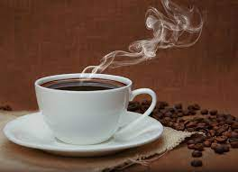
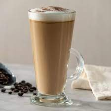
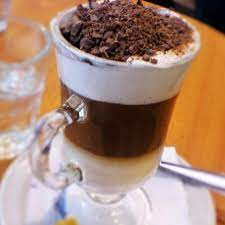

Expresso
Se caracteriza por su rápida preparación a una alta presión y por un sabor y textura más concentrados

Americano
Café preparado con una cantidad de agua mayor que la habitual.
Macchiato
Un café macchiato vendría a ser un café expreso que se ha cortado con leche para reducir el amargor

Cafe con leche
El café con leche es una de las bebidas más comunes que incluyen café. Consta básicamente de dos ingredientes: café (como infusión) y leche

latte
el café latte se prepara con una o dos dosis de expreso (1/3 de la bebida) y 2/3 de leche calentada con vapor, con una pequeña capa (alrededor de 1 cm) de espuma de leche.
Capuccino
Un cappuccino corresponde aproximadamente a 150 ml de bebida, compuesta por un espresso (30 ml) + partes iguales de leche y crema de leche.
Chocolate caliente
Es conocido como chocolatada, chocolate en polvo a gusto, y rellenamos con leche
Tè clasico
Te clasico con agua caliente
Agua caliente
Agua caliente, para los bebes y su mamadera